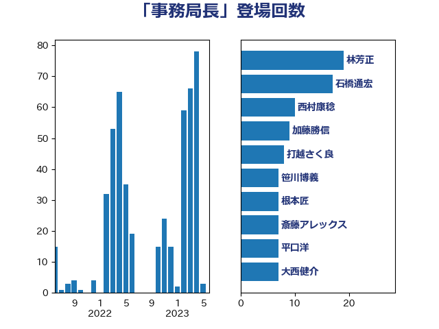

単語「事務局長」

| 林芳正 | 自由民主党 | 19 回 |
| 石橋通宏 | 立憲民主党 | 17 回 |
| 西村康稔 | 自由民主党 | 10 回 |
| 加藤勝信 | 自由民主党 | 9 回 |
| 打越さく良 | 立憲民主党 | 8 回 |
| 笹川博義 | 自由民主党 | 7 回 |
| 根本匠 | 自由民主党 | 7 回 |
| 斎藤アレックス | 国民民主党 | 7 回 |
| 平口洋 | 自由民主党 | 7 回 |
| 大西健介 | 立憲民主党 | 7 回 |
| 竹内譲 | 公明党 | 6 回 |
| 井上哲士 | 日本共産党 | 6 回 |
| 荒井優 | 立憲民主党 | 5 回 |
| 滝波宏文 | 自由民主党 | 5 回 |
| 安江伸夫 | 公明党 | 5 回 |
| 中谷真一 | 自由民主党 | 5 回 |
| 三浦信祐 | 公明党 | 5 回 |
| 青山大人 | 立憲民主党 | 4 回 |
| 足立康史 | 日本維新の会 | 4 回 |
| 緒方林太郎 | 無所属 | 4 回 |
| 牧原秀樹 | 自由民主党 | 4 回 |
| 櫛渕万里 | れいわ新選組 | 4 回 |
| 杉尾秀哉 | 立憲民主党 | 4 回 |
| 宮崎政久 | 自由民主党 | 4 回 |
| 城内実 | 自由民主党 | 4 回 |
| 古賀友一郎 | 自由民主党 | 4 回 |
| 中根一幸 | 自由民主党 | 4 回 |
| 鈴木敦 | 国民民主党 | 3 回 |
| 野間健 | 立憲民主党 | 3 回 |
| 進藤金日子 | 自由民主党 | 3 回 |
| 舩後靖彦 | れいわ新選組 | 3 回 |
| 自見はなこ | 自由民主党 | 3 回 |
| 篠原孝 | 立憲民主党 | 3 回 |
| 笠井亮 | 日本共産党 | 3 回 |
| 石川大我 | 立憲民主党 | 3 回 |
| 石原宏高 | 自由民主党 | 3 回 |
| 矢倉克夫 | 公明党 | 3 回 |
| 田村智子 | 日本共産党 | 3 回 |
| 水野素子 | 立憲民主党 | 3 回 |
| 橋本岳 | 自由民主党 | 3 回 |
| 榛葉賀津也 | 国民民主党 | 3 回 |
| 森英介 | 自由民主党 | 3 回 |
| 東徹 | 日本維新の会 | 3 回 |
| 山谷えり子 | 自由民主党 | 3 回 |
| 山田賢司 | 自由民主党 | 3 回 |
| 小倉將信 | 自由民主党 | 3 回 |
| 宮崎勝 | 公明党 | 3 回 |
| 城井崇 | 立憲民主党 | 3 回 |
| 國重徹 | 公明党 | 3 回 |
| 古屋範子 | 公明党 | 3 回 |
| 中山展宏 | 自由民主党 | 3 回 |
| 高野光二郎 | 自由民主党 | 2 回 |
| 高橋光男 | 公明党 | 2 回 |
| 音喜多駿 | 日本維新の会 | 2 回 |
| 階猛 | 立憲民主党 | 2 回 |
| 鈴木隼人 | 自由民主党 | 2 回 |
| 鈴木淳司 | 自由民主党 | 2 回 |
| 鈴木宗男 | 日本維新の会 | 2 回 |
| 野田聖子 | 自由民主党 | 2 回 |
| 里見隆治 | 公明党 | 2 回 |
| 赤澤亮正 | 自由民主党 | 2 回 |
| 羽田次郎 | 立憲民主党 | 2 回 |
| 福島伸享 | 無所属 | 2 回 |
| 福島みずほ | 社会民主党 | 2 回 |
| 福山哲郎 | 立憲民主党 | 2 回 |
| 石川博崇 | 公明党 | 2 回 |
| 田島麻衣子 | 立憲民主党 | 2 回 |
| 牧島かれん | 自由民主党 | 2 回 |
| 渡辺創 | 立憲民主党 | 2 回 |
| 清水貴之 | 日本維新の会 | 2 回 |
| 清水真人 | 自由民主党 | 2 回 |
| 武井俊輔 | 自由民主党 | 2 回 |
| 柚木道義 | 立憲民主党 | 2 回 |
| 徳永エリ | 立憲民主党 | 2 回 |
| 後藤茂之 | 自由民主党 | 2 回 |
| 平木大作 | 公明党 | 2 回 |
| 市村浩一郎 | 日本維新の会 | 2 回 |
| 山添拓 | 日本共産党 | 2 回 |
| 小西洋之 | 立憲民主党 | 2 回 |
| 小山展弘 | 立憲民主党 | 2 回 |
| 宮本岳志 | 日本共産党 | 2 回 |
| 大石あきこ | れいわ新選組 | 2 回 |
| 和田有一朗 | 日本維新の会 | 2 回 |
| 和田政宗 | 自由民主党 | 2 回 |
| 古川禎久 | 自由民主党 | 2 回 |
| 伊藤岳 | 日本共産党 | 2 回 |
| 下条みつ | 立憲民主党 | 2 回 |
| 上田清司 | 国民民主党 | 2 回 |
| 上月良祐 | 自由民主党 | 2 回 |
| 鶴保庸介 | 自由民主党 | 1 回 |
| 高木かおり | 日本維新の会 | 1 回 |
| 青柳仁士 | 日本維新の会 | 1 回 |
| 青木一彦 | 自由民主党 | 1 回 |
| 青山繁晴 | 自由民主党 | 1 回 |
| 長谷川岳 | 自由民主党 | 1 回 |
| 金子恵美 | 立憲民主党 | 1 回 |
| 金子恭之 | 自由民主党 | 1 回 |
| 金子俊平 | 自由民主党 | 1 回 |
| 金城泰邦 | 公明党 | 1 回 |
| 野中厚 | 自由民主党 | 1 回 |
| 逢坂誠二 | 立憲民主党 | 1 回 |
| 赤羽一嘉 | 公明党 | 1 回 |
| 西野太亮 | 自由民主党 | 1 回 |
| 西村智奈美 | 立憲民主党 | 1 回 |
| 藤田文武 | 日本維新の会 | 1 回 |
| 葉梨康弘 | 自由民主党 | 1 回 |
| 菊田真紀子 | 立憲民主党 | 1 回 |
| 若宮健嗣 | 自由民主党 | 1 回 |
| 芳賀道也 | 国民民主党 | 1 回 |
| 篠原豪 | 立憲民主党 | 1 回 |
| 笠浩史 | 無所属 | 1 回 |
| 稲田朋美 | 自由民主党 | 1 回 |
| 秋本真利 | 自由民主党 | 1 回 |
| 石垣のりこ | 立憲民主党 | 1 回 |
| 石井章 | 日本維新の会 | 1 回 |
| 田村貴昭 | 日本共産党 | 1 回 |
| 田村憲久 | 自由民主党 | 1 回 |
| 熊谷裕人 | 立憲民主党 | 1 回 |
| 熊田裕通 | 自由民主党 | 1 回 |
| 浮島智子 | 公明党 | 1 回 |
| 浜田靖一 | 自由民主党 | 1 回 |
| 河野義博 | 公明党 | 1 回 |
| 河西宏一 | 公明党 | 1 回 |
| 江田憲司 | 立憲民主党 | 1 回 |
| 森山浩行 | 立憲民主党 | 1 回 |
| 森屋宏 | 自由民主党 | 1 回 |
| 梅谷守 | 立憲民主党 | 1 回 |
| 梅村聡 | 日本維新の会 | 1 回 |
| 柳ヶ瀬裕文 | 日本維新の会 | 1 回 |
| 松川るい | 自由民主党 | 1 回 |
| 松原仁 | 立憲民主党 | 1 回 |
| 松下新平 | 自由民主党 | 1 回 |
| 本田太郎 | 自由民主党 | 1 回 |
| 本庄知史 | 立憲民主党 | 1 回 |
| 末松信介 | 自由民主党 | 1 回 |
| 木村英子 | れいわ新選組 | 1 回 |
| 木原誠二 | 自由民主党 | 1 回 |
| 木原稔 | 自由民主党 | 1 回 |
| 有村治子 | 自由民主党 | 1 回 |
| 星北斗 | 自由民主党 | 1 回 |
| 斉藤鉄夫 | 公明党 | 1 回 |
| 手塚仁雄 | 立憲民主党 | 1 回 |
| 後藤祐一 | 立憲民主党 | 1 回 |
| 平林晃 | 公明党 | 1 回 |
| 平将明 | 自由民主党 | 1 回 |
| 工藤彰三 | 自由民主党 | 1 回 |
| 川田龍平 | 立憲民主党 | 1 回 |
| 島尻安伊子 | 自由民主党 | 1 回 |
| 山田宏 | 自由民主党 | 1 回 |
| 山崎誠 | 立憲民主党 | 1 回 |
| 山口那津男 | 公明党 | 1 回 |
| 山下貴司 | 自由民主党 | 1 回 |
| 小野泰輔 | 日本維新の会 | 1 回 |
| 小熊慎司 | 立憲民主党 | 1 回 |
| 小沼巧 | 立憲民主党 | 1 回 |
| 小林鷹之 | 自由民主党 | 1 回 |
| 小林茂樹 | 自由民主党 | 1 回 |
| 寺田静 | 無所属 | 1 回 |
| 寺田稔 | 自由民主党 | 1 回 |
| 宮路拓馬 | 自由民主党 | 1 回 |
| 宮下一郎 | 自由民主党 | 1 回 |
| 守島正 | 日本維新の会 | 1 回 |
| 奥野総一郎 | 立憲民主党 | 1 回 |
| 大西英男 | 自由民主党 | 1 回 |
| 大島九州男 | れいわ新選組 | 1 回 |
| 塩村あやか | 立憲民主党 | 1 回 |
| 塩崎彰久 | 自由民主党 | 1 回 |
| 堤かなめ | 立憲民主党 | 1 回 |
| 堂故茂 | 自由民主党 | 1 回 |
| 堀内詔子 | 自由民主党 | 1 回 |
| 国光あやの | 自由民主党 | 1 回 |
| 吉良よし子 | 日本共産党 | 1 回 |
| 古賀篤 | 自由民主党 | 1 回 |
| 務台俊介 | 自由民主党 | 1 回 |
| 倉林明子 | 日本共産党 | 1 回 |
| 佐藤啓 | 自由民主党 | 1 回 |
| 今枝宗一郎 | 自由民主党 | 1 回 |
| 今井絵理子 | 自由民主党 | 1 回 |
| 丸川珠代 | 自由民主党 | 1 回 |
| 中野洋昌 | 公明党 | 1 回 |
| 中曽根弘文 | 自由民主党 | 1 回 |
| 中川郁子 | 自由民主党 | 1 回 |
| 中島克仁 | 立憲民主党 | 1 回 |
| 上野通子 | 自由民主党 | 1 回 |
| 上野賢一郎 | 自由民主党 | 1 回 |